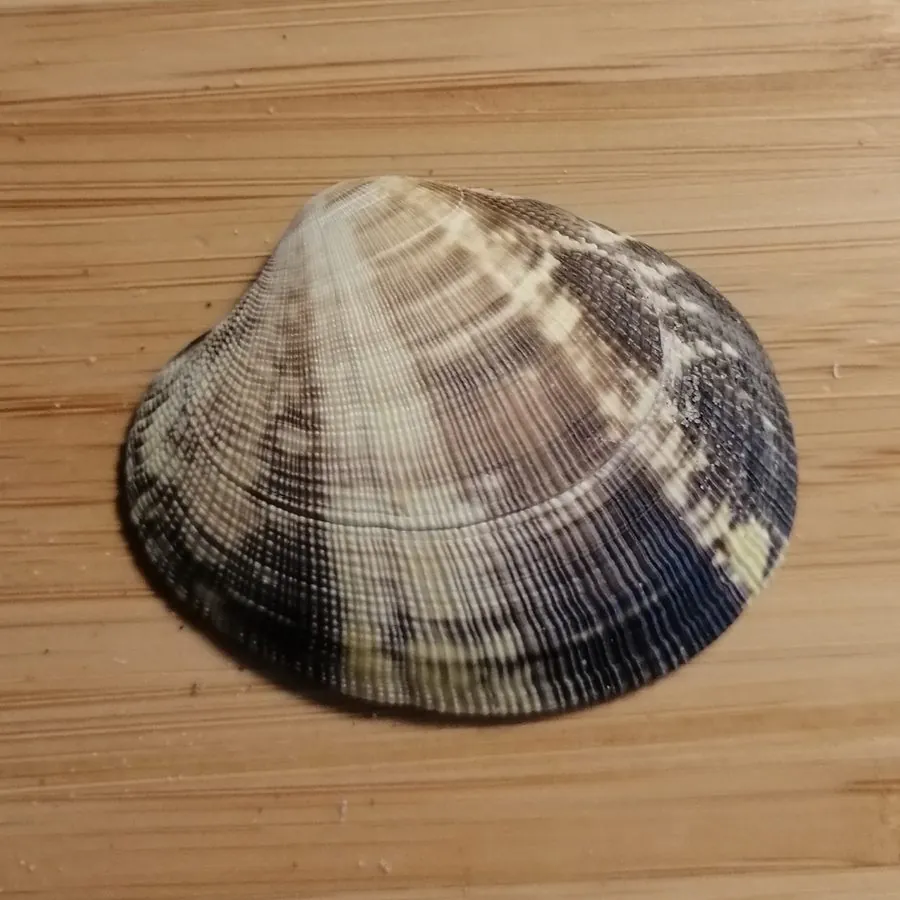

软体动物 · 动物界
菲律宾蛤仔 Ruditapes philippinarum

壳面有放射肋和褐色花纹的中型蛤类，俗称花蛤，栖息于潮间带沙泥底，是中国产量最大的养殖贝类之一。
- 分类
- 门软体动物门纲双壳纲目帘蛤目科帘蛤科属蛤仔属
- 栖息环境
- 潮间带中下区至水深数米的沙泥底，潜钻于数厘米深的泥沙中
- 地理分布
- 印度洋至西太平洋沿岸，包括中国南北沿海、日本、朝鲜半岛和菲律宾
- 保护级别
- 尚无保护级别；资源受养殖规模与近岸污染影响
物种志
菲律宾蛤仔的贝壳呈卵圆形，壳长四至六厘米，壳质坚厚，两壳相等，壳面有细密的放射肋，肋上与同心生长纹交织成布纹状，壳色变化很大，有黄褐、灰白、深褐等，常缀有锯齿状或网状的褐色花纹，花蛤之名由此而来。壳内面白色或淡紫色，铰合部有两枚主齿，水管较粗，末端有触手。
它分布于印度洋至西太平洋的沿岸，包括中国南北沿海、日本、朝鲜半岛、菲律宾和印度尼西亚，栖息在潮间带中下区至水深数米的沙泥底和泥沙底，靠足部潜钻，潜入深度约数厘米，退潮后在滩面上留下密集的水管孔。它滤食水中的浮游藻类和有机碎屑，繁殖期在春夏，幼虫浮游后附着变态，一年可达性成熟。它是中国产量最大的养殖贝类之一，肉质鲜美，可鲜食、炒食或制蛤干，目前尚无保护级别，资源主要受养殖规模和近岸污染影响。
形态与习性
- 壳长四至六厘米，卵圆形，壳质坚厚
- 壳面细密放射肋，交织褐色锯齿状花纹
- 栖息水层潮间带中下区至水深数米的沙泥底
- 潜钻靠足部潜入泥沙数厘米，留水管孔
- 食性滤食浮游藻类与有机碎屑
- 利用中国产量最大的养殖贝类之一，可鲜食或制蛤干
趣味知识
- 退潮后的滩面上密密麻麻的小孔，就是它插在沙里的水管。
- 它壳上的褐色花纹像锯齿又像网，几乎每只都不一样。
- 它是中国产量最大的养殖贝类，夜市里那盘炒花蛤多半就是它。